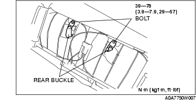

Rear buckle removal/installation 1. Fold the rear seat upward. 2. Partially peel back the rear cushion trim. 3. Remove the bolts, and then remove the rear buckles. 4. Install in the reverse order of removal.